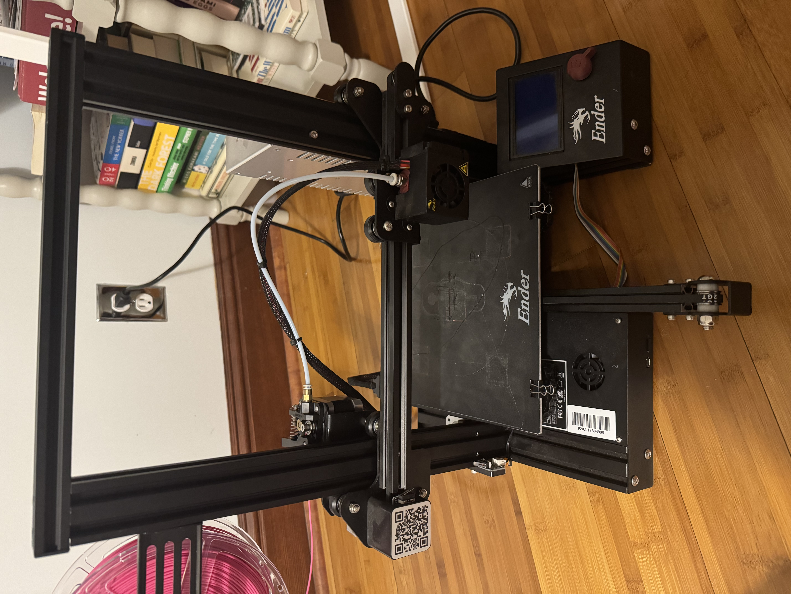
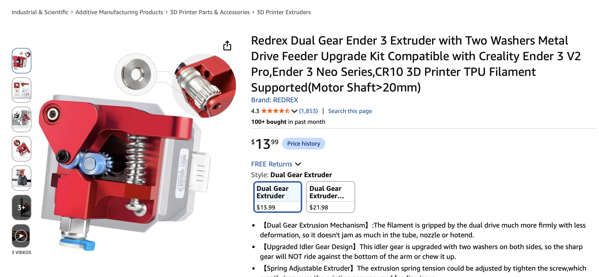
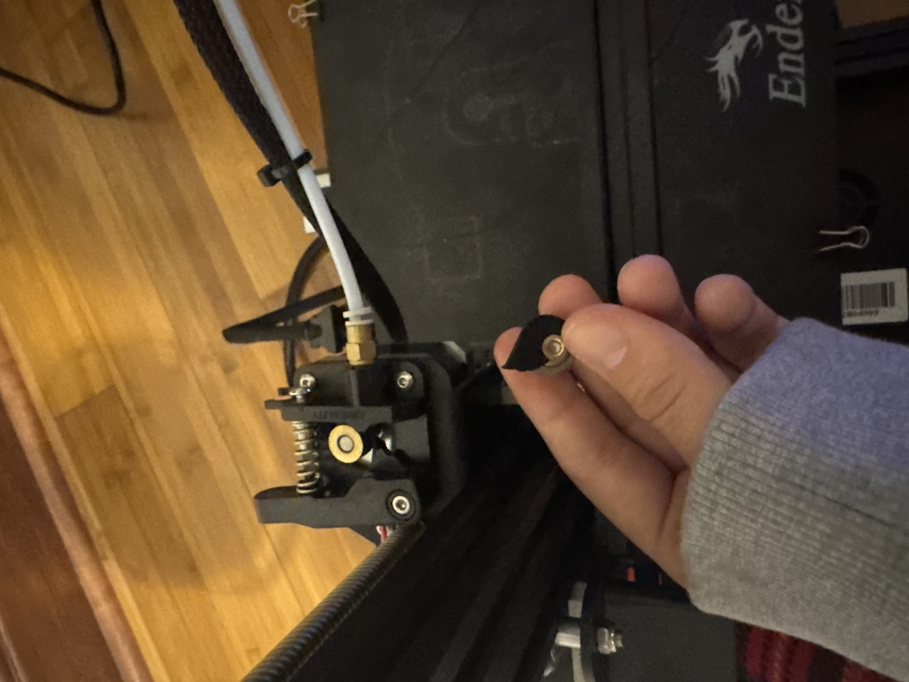
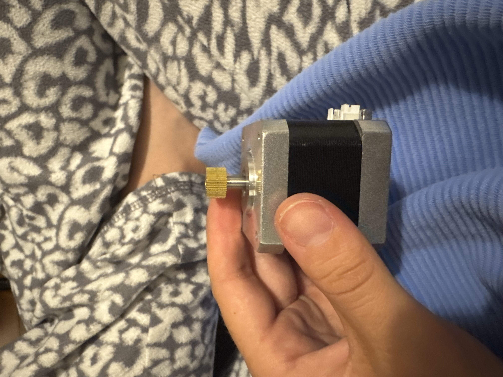
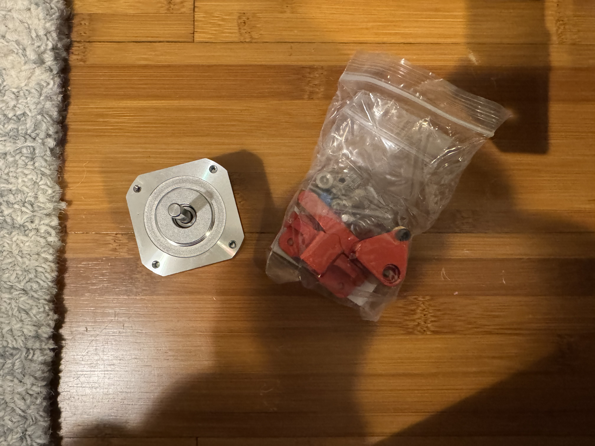
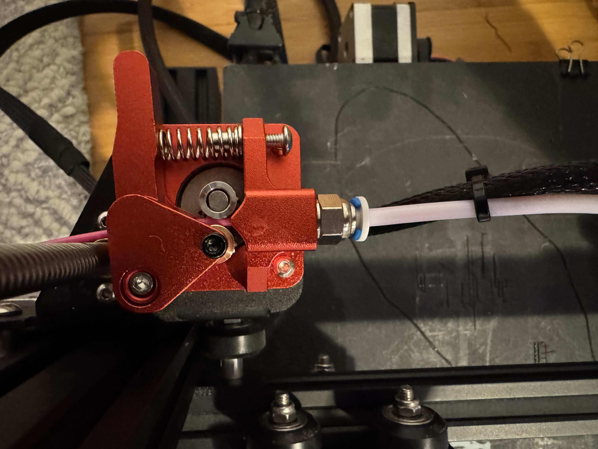
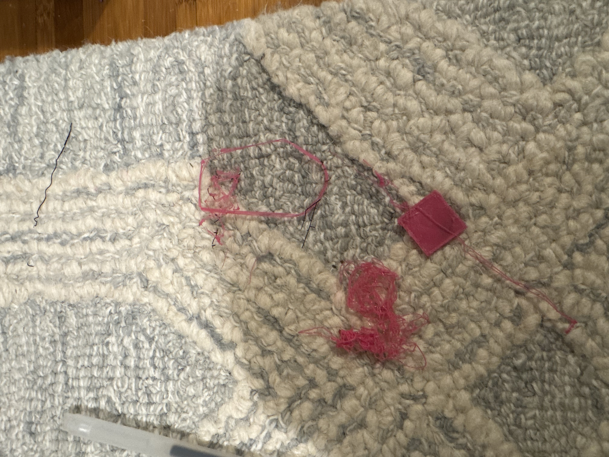
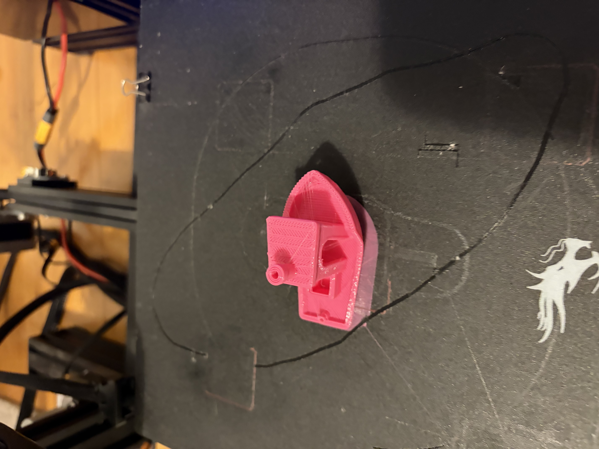
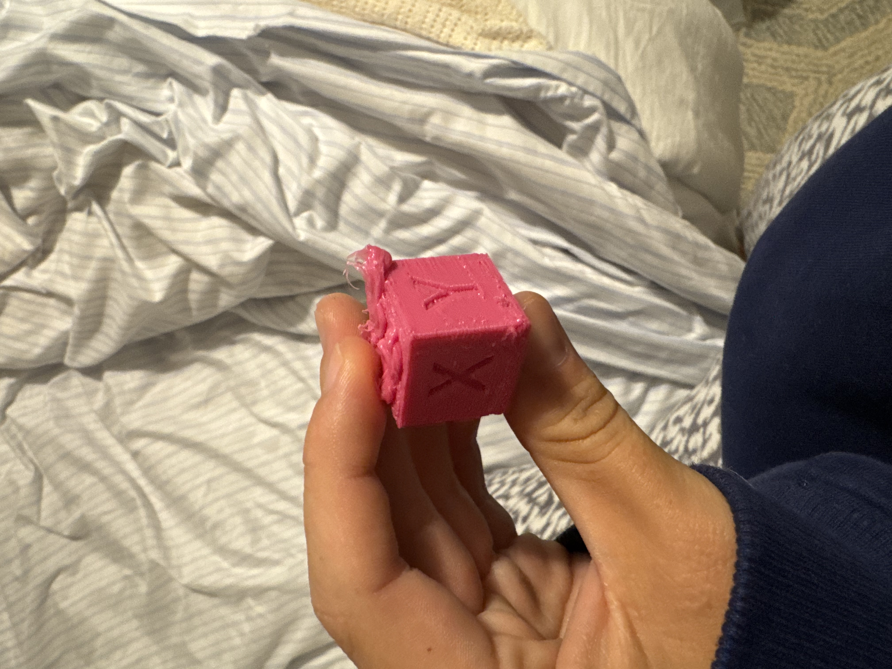

Explore
My Ender3

The repair log
June 22
Getting the printer running
The first signs of trouble showed up...early, but what can you expect from a $50 printer of FB marketplace? I was all excited to print, found the correct cable to plug my printer in, and after the moment of truth... nothing happened.
The first step was to get the printer running. Unfortunately, with a seven-year-old second-hand printer, something was bound to go wrong, and a bearing for loading the PLA into the extruder broke off. So I ordered a replacement piece so I could start printing.
Next steps are getting a first successful print, adding automatic bed leveling, and setting up a Raspberry Pi server so I don't have to load files manually with an SD card.
View 2 photos from this update


July 6
Replacing the extruder & first prints
Made a tiny mistake on the extruder piece. Turns out that, for an Ender3, there are two variants on the extruder stepper motor. One variant has a small screw that allows you to remove the gear, and another has a press-on gold gear you can't remove. I had the latter (unfortunately). So I reordered another extruder replacement matching the stepper motor and gear I had, and replaced it! As a software person, this was definitely a learning moment...
This also came with a new stepper and the first gear component I mentioned-- but the wasn't sticking, so I put some adhesive foam under the gear to make them mesh and I had a *working* extruder. I spent the red of the night tuning some print settings to produce two prints the next day: a calibration cube and, of course, benchy. I'm going to have to figure out a better fix for this at some point, but for now, the adhesive works.
View 6 photos from this update






July 15
In hot water with my hot end
Everything was going well! My next steps were to add a BLTouch sensor for automatic bed-leveling and begin working on my clipper installation. But, I started noticing some weird issues printing - primarily, some spaghettied prints and then certain parts of the print being super thin. It didn't look right, and I realized the nozzle was really clogged.
I was lucky in that the previous owner had gifted a ton of nozzles, but as I got my socket wrench and started to try and dislodge the nozzle (burning myself a couple times, since you need to heat up the hotend, so the metal expands and you can get the nozzle out. Great design imo for locking the nozzle in, but terrible if your hotend is going to get clogged a lot...and it does...). Unfortunately, it was almost impossible to get out, since molten plastic had been leaking out and effectively locked the nozzle into place. By the time I was able to get it out, I realized that the entire socket was COMPLETELY stripped. ie., there would be no new nozzle going there.
My boyfriend had a another hotend, and I took out the old one and started to replace it with the new one.
Notes & next steps
I fear this point is where I went abroad to Madrid. With two suitcases already weighed down with clothes and a very non-Californian coat, the Ender3 did not fit (as much as I wanted it to). So, the adventure will resume in winter - where I already have a BLTouch sensor waiting, a new hotend replacement, many pis, and many ideas.